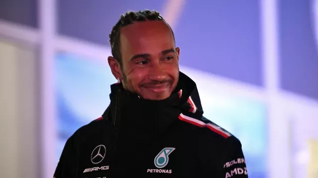

21:20 01.02.2024 (обновлено: 23:54 01.02.2024)
Последний шанс. Хэмилтон идет в "Феррари" за рекордным титулом
Семикратный чемпион "Формулы 1" Хэмилтон переходит в "Феррари"
Сенсацией в четверг прозвучала новость о том, что семикратный чемпион мира "Формулы-1" Льюис Хэмилтон собирается покинуть "Мерседес" и подписать контракт с "Феррари". Сомнений, в чем цель этого перехода, нет - рекордный титул, который британец хочет завоевать под занавес карьеры. По сведениям многочисленных источников, в том числе сайта Motorsport.com, переговоры Скудерии и британского гонщика находятся на завершающей стадии. Официального объявления можно ожидать в ближайшие дни.
Однако в последние два года в отлаженном, как часы, немецком механизме что-то сбилось. А именно - инженеры команды затратили слишком долгое время на адаптацию машины к изменениям в техническом регламенте, связанным с появлением так называемого "граунд-эффекта". И это напрямую сказалось на результатах. В 2022 году Хэмилтон пришел к финишу сезона лишь шестым, а в 2023-м - третьим. Но без каких-либо шансов реальной борьбы с доминированием "Ред Булла" и ведущего пилота этой команды Макса Ферстаппена.
В прошлом году Хэмилтон подписал контракт с "Мерседесом" на 2024 и 2025 годы, но сейчас появилась информация, что вторая часть соглашения была только опционной. Если это так, британец сможет присоединиться к "Феррари" через сезон. Еще совсем недавно казалось, что британец собирается завершить карьеру именно в "Мерседесе". Сам пилот заявлял в прошлом сезоне, что не сомневается в способности вернуться в топ. "Мы там были раньше, как команда, к нам приходят новые люди, у нас остаются наши ценности, я вижу, с каким фокусом все работают", - отметил Хэмилтон, комментируя свои перспективы в команде, с которой он шесть раз завоевывал чемпионский трофей (самый первый был в "Макларене").
Конечно, переход в "Феррари" - это риск и никаких гарантий. Даже за статус номера один в команде Хэмилтону придется бороться - ведь его напарником станет Шарль Леклер, подписавший на днях новое долгосрочное соглашение со Скудерией. Но как минимум Льюис придет в коллектив, где кое-кто ему знаком с давних времен. Речь о руководителе гоночной команды Фредерике Вассёре, с которым британец работал еще на заре своей карьеры. Собственно, Вассёр не раз признавался, что до сих пор регулярно общается с Хэмилтоном, так что нетрудно догадаться, кто стоит за этим переходом.
По информации издания The Independent, Хэмилтон, сообщая руководителю "Мерседеса" Тото Вольффу о предстоящем уходе, объяснил это очень просто - хочет попробовать что-то новое. И это, возможно, совершенно исчерпывающая формулировка. Чтобы выиграть в лотерею, нужно как минимум купить билет. Льюис это сделал в надежде на последний шанс выиграть рекордный чемпионский титул. И если у него это получится, красивее истории будет трудно придумать.
Главные новости
-
Друг Овечкина временно покинул "Вашингтон". Новая эпидемия в НХЛ?
11.38
-
Бетербиев и Бивол подерутся летом! Отвечаем на пять главных вопросов по бою
12.53
-
Последний шанс. Хэмилтон идет в "Феррари" за рекордным титулом
12.53
-
В "Шанхае" - без раскачки: клуб Слуцкого разгромно проиграл "Зениту"
12.53
-
Самсонова вышла в полуфинал турнира в Абу-Даби
14.13
-
Лебедев назвал формальностью нейтральный статус россиян на Олимпиаде
10.05